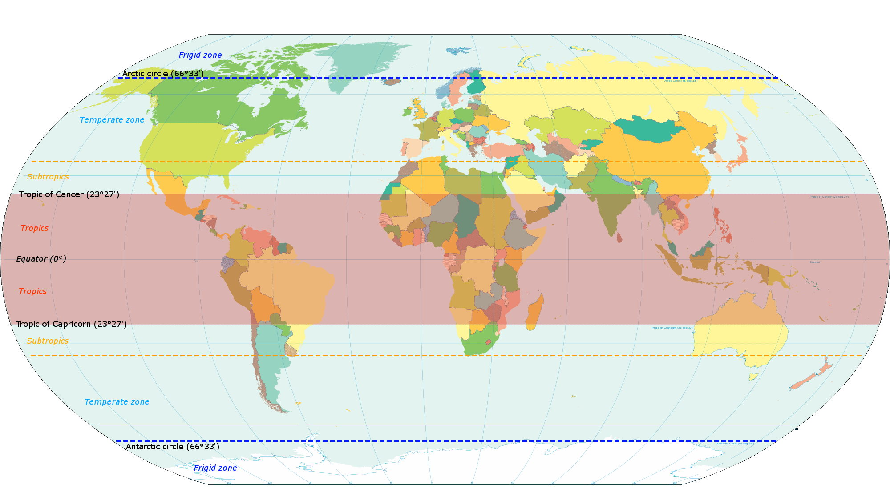

Tropical oceans encircle Earth in an equatorial band between the Tropic of Cancer (23.5° North latitude) and the Tropic of Capricorn (23.5° South latitude). The central portions of the Pacific and Atlantic Oceans and most of the Indian Ocean lie in the tropics. The warm tropical oceans play a critical role in regulating Earth's climate and large-scale weather patterns. Much of the planet's biological diversity resides in the tropics, and the global distribution of species and ecosystems depends on oceanographic and atmospheric processes that occur in the equatorial oceans.
Food Chains & Webs
Two examples of tropical ocean food chains and food webs include:
Energy Pyramid
Each successive trophic level has a smaller population and gains less energy than the level before it.
Glossary
-
biome: a major ecological community of organisms adapted to a particular climatic or environmental condition on a large geographic area in which they occur
-
calicles: a spongy cuplike base, usually in corals
-
climate: pattern of weather conditions over a time
-
endangered: seriously at risk for extinction
-
equatorial band: between 23.5 degrees N and 23.5 degrees S
-
human impact: the effects of human actions on one thing or another
-
phytoplankton: single celled organism that perform photosynthesis on the surface of the ocean
-
sea mammals: warm-blooded, milk-giving, air-breathing, live-birthing animals that have adaptations to hold breath for a long time underwater
-
tentacles: a slender flexible limb or appendage in an animal, especially around the mouth of an invertebrate, used for grasping, moving about, or bearing sense organs
-
weather: the temperature, precipitation level, and other natural atmospheric conditions
Works Cited